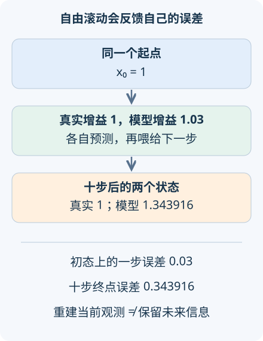

AI 研究 05 · 潜在世界模型：能预测下一帧，还能预测下一步行动吗
问题：模型想象中的十步都很合理，真实执行为什么仍会走偏？先修：可验证奖励与强化学习、条件概率与递推。资料核查截至 2026-09-08；本讲开启“世界模型与具身”四讲路线，实验是无量纲线性动力学的精确对照。
1. 世界模型需要保留什么
看到一张杯子的照片，并不知道它正向左还是向右移动。若智能体只能依据当前图像，下一刻的预测就可能有两个解释。世界模型通常把历史观测与动作压缩成内部状态，再预测行动后的状态、观测和奖励。这种内部状态称为潜在状态，它不是现实世界的完整复制。
记观测为 \(o_t\)、动作为 \(a_t\)，历史为 \(h_t=(o_{0:t},a_{0:t-1})\)。编码器产生 \(z_t=E(h_t)\)，转移模型为 \(p_\theta(z_{t+1}\mid z_t,a_t)\)，奖励模型为 \(r_\theta(z_t,a_t)\)。理想情况下，\(z_t\) 保留对未来任务相关量的预测所需信息，使额外历史不再显著改变条件分布。
这比重建当前图像更强。设隐状态 \(x=\pm1\)，观测 \(o=x^2=1\)，行动让 \(x'=x+1\)。两种隐状态的下一观测分别为 4 和 0。能够完美重建当前的 1，并不意味着知道该预测哪个未来。需要历史、额外传感器，或显式保留多种可能的信念状态。

2. 从一步训练到想象中的行为
一个典型训练目标同时包含观测重建、奖励预测，以及让看过新观测的后验状态与仅依据历史的先验转移接近的项。不同算法的离散潜变量、损失缩放和梯度处理不同，但共同问题是：训练时有真实数据校正，想象时却要继续使用自己预测的状态。
Dreamer，首稿 2019-12-03利用潜在空间中的想象轨迹学习行为。DreamerV3，首稿 2023-01-10进一步研究跨多类任务的通用训练设置。这些工作说明潜在预测可以支持控制，不意味着每个潜变量都有唯一物理解释，也不意味着画面更逼真一定带来更好的动作。
给定策略 \(\pi(a\mid z)\)，可以在模型中滚动并估计折扣回报
\(\gamma\in[0,1]\) 是折扣因子，\(H\) 是想象长度。优化该量只直接改善模型内的目标；若策略找到模型没有学对的区域，它可能提高预测回报，同时降低真实回报。训练数据来自哪些策略与状态，因此是控制问题的一部分。
3. 一个三行就能看见的长时误差
设 \(x_0=1\)，真实系统满足 \(x_{t+1}=ax_t\)，学得模型为 \(\hat x_{t+1}=(a+\delta)\hat x_t\)。逐次代入得到
这里 \(\delta\) 是增益偏差，不是每一步恒定的绝对状态误差。默认 \(a=1,\delta=0.03,H=10\)：初态上的一步误差为 0.03，十步后却为 \(1.03^{10}-1=0.343916\)。模型反复放大已偏大的输入，导致错误持续积累。
当 \(\delta\) 很小时，对参数做一阶展开：\((a+\delta)^H-a^H\approx Ha^{H-1}\delta\)。它是局部近似，较大的 \(H\delta\) 会使高阶项不可忽略。也不要把所有系统都叫指数爆炸：若两种增益都小于 1，状态和长时绝对差可能都衰减；观察时间范围和归一化方式会改变读图结论。
4. 一般误差界有哪些前提
对真实映射 \(f\) 与模型 \(\hat f\)，假设沿所需区域，\(f\) 的 Lipschitz 常数为 \(L\)，且 \(\|\hat f(x)-f(x)\|\le\varepsilon\)。同一起点自由滚动后，由三角不等式
推导是在 \(\hat f(\hat x_t)-f(x_t)\) 中加减 \(f(\hat x_t)\)。关键是单步误差界必须覆盖模型自己访问的状态，而非只在训练样本上平均成立。若系统有行动，上述界还需在比较采用的行动条件下成立；两条轨迹采用不同反馈动作时，必须进一步处理策略误差。
因此多步训练、模型集成和短时想象都有合理动机，但都不是无条件保证。集成成员可能共享同一种数据缺口；看似一致的不确定性很小，现实偏差仍然很大。专业评估应把真实观测校正的一步预测，与起点相同、行动序列固定的自由滚动分开报告，再测量策略改变后访问区域中的表现。
5. 近期研究推进了哪一个瓶颈
Dreamer 4，首稿 2025-09-29研究更可扩展的视频世界模型与模型内行为学习，报告在 Minecraft 中仅用离线数据学习取得钻石的控制任务，并处理动作条件与对象交互预测。这是特定环境、数据和协议下的研究证据，不是机器人现实交互已由离线视频全面解决。
阅读这条前沿路线时，可以用本讲提出三个具体问题：模型是否保留与行动结果有关的隐信息；长时评估是否固定了比较的动作序列；策略改进是否在真实环境中验证。视觉相似度主要度量图像层面的误差，任务奖励可能只在少数接触事件处敏感，二者不一定同步改善。
还要把想象长度与实际行动长度区分开：模型可以预测二十步，控制器却只执行一步便重新观察。这样的反馈可能减轻自由滚动误差，但不能让预测本身变准确。比较方法时若一个系统每步获得真实观测、另一个连续开环执行，二者使用的信息不同，必须在评估协议里明示。
默认终点为真实 1、模型 1.343916。先把偏差改为零，检查任意步数都重合；再把真实增益降低，观察同样参数偏差是否仍造成同样终点误差。最后分别关注绝对误差与相对误差，解释为什么两者可能给出不同直觉。
6. 迁移练习
题一：模型在训练集的一步均方误差很小，能否直接把其平方根代入上述一致误差界？
展开答案
不能。均方误差对某个数据分布平均，而界需要访问区域中的逐点上界。罕见状态可能误差很大，策略也可能集中访问这些状态。需要明确分布与访问范围，或改用带概率条件的误差分析。
题二：两个潜在编码都能完美重建当前照片，其中一个保留最近运动方向，另一个没有。怎样设计预测测试区分它们？
展开答案
选择当前画面近似相同、历史运动方向相反的样本，施加相同动作，比较未来位置或接触事件的条件预测。只测当前重建无法区分；还应允许后验保留多峰，不强迫未知状态成为单一确定点。
速查摘要
| 概念 | 条件或公式 |
|---|---|
| 潜在状态 | 历史压缩应保留任务相关未来的信息 |
| 线性滚动 | \(e_H=\lvert(a+\delta)^H-a^H\rvert\) |
| 一般误差界 | \(e_H\le\varepsilon\sum L^j\)，需访问区域的一致单步界 |
来源：Dreamer、DreamerV3、Dreamer 4。先修：可验证奖励与强化学习；下一讲：模型预测规划。